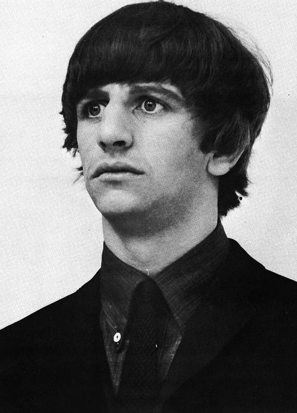
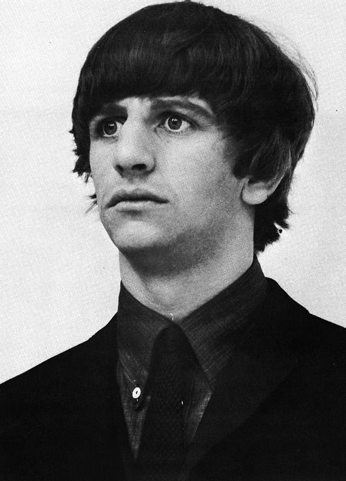

História da banda
A banda Beatles começou em 1960 no Reino Unido na cidade de Liverpool, era formada pelos integrantes John Lennon, Ringo Starr, Paul McCartney e George Harrison, antes de se tornarem os beatles em 1960, o integrante John Lennon era parte de uma banda em sua escola em 1957.
Neste mesmo ano John Lennon convidou Paul McCartney para sua banda, e em 1958 George Harrison foi convidado para a banda também e apenas em 1960 eles mudariam o nome da banda que era Quarry Bank School para o conhecido nome The Beatles.
Em 1961 a banda faria sua primeira apresentação no Tavern Club onde ficou tocando até 1963, em 1962 assinaram o contrato com o empresario Briam Epstein, que fez então uma mudança no visual dos integrantes, que na época utilizavam roupas de couro pelas roupas formais que virariam caracteristica da banda no futuro.
Em 1962 os beatles tomaram a forma conhecida com apenas os quatro integrantes principais além de gravar seu primeiro albúm e aparecer na televisão.
Em 1969 eles gravaram o penultimo albúm antes da saida de John Lennon no grupo, anunciando em 1970 o fim da banda.


 
